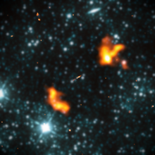

Las radiogalaxias suelen estar asociadas a galaxias tipo E con núcleo activo. Emiten a longitudes de onda de radio y algunas pueden ser relativamente débiles. Suelen ser galaxias que se extienden por amplias zonas del espacio. Presentan un núcleo brillante y normalmente suelen estar rodeadas por dos chorros de partículas de grandes dimensiones. Además, en muchas de ellas se ha detectado radiación sincrotrón.
